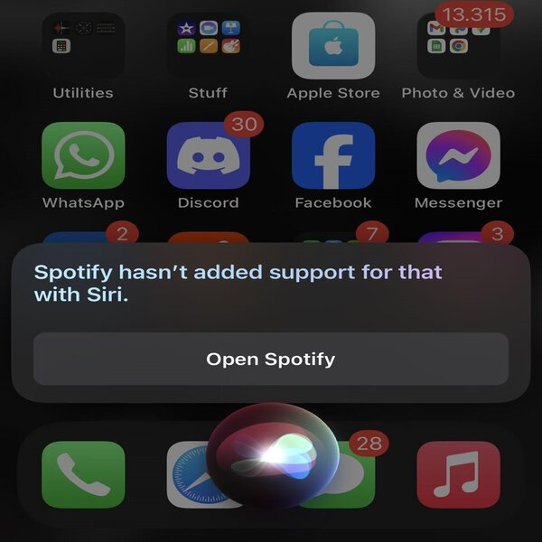
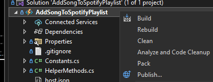
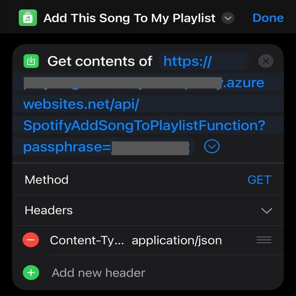

Introduction
It often happens that I stumble upon a good new song that I would like to save for later, without having to remember the name.
“Hey Siri - add this song to my playlist!”
Not helpful…
Siri and Spotify already have some integrations, but the one I needed was not available.
Spotify and Siri integration. - Read more.
In order to add the currently playing song, I need to do a few steps to make it work, but I wanted to do it in 1. As you'll see in this guide I decided to leverage a Siri Shortcut to trigger a simple Azure Function.
Setup
In order to realize my idea I decided to use .Net and Azure Functions.
Since I decided to use .Net, I've been using visual studio as my IDE and i followed the First C# function in Azure using Visual Studio docs.
After following all the steps from the link, you can add the additional packages that we used through the nuget package manager.
package Azure.Identity
package Azure.Security.KeyVault.Secrets
package Newtonsoft.Json
I opted for a keyvault so that we could securely store our sensitive data and thats why we needed some other packages.
Spotify application
If you don't have a spotify account, you need to create one and then log in to their site.
There you need to create an application that you will configure and get the necessary data for authentication.
When you go to the application settings, you can see the ClientId and ClientSecret when you expand. It is important that your redirect uri is your callback function route, because after the user approves the authorization, the flow is redirected there.
Resources
After setting up the project following the example, we can immediately create resources on azure that we plan to use.
For this project you will need:
- Azure Function App
- Azure Storage Account
- Azure Key Vault
- Azure Application insights (optional > logging)
Some resources will automatically be created for you after you deploy your function following the docs i linked in setup. You just need to publish your application.
Authorization
Since we used scoped data in this example, I decided to use Authorization Code Flow.
In this Spotify documentation you can read how to implement that flow to access users data and see my class SpotifyAuthorization where I implemented that flow in C#
I followed every step by this article and decited to store the returned tokens in Key Vault.
string responseContent = await res.Content.ReadAsStringAsync();
if (responseContent != null)
{
JObject tokenData = JObject.Parse(responseContent);
await HelperMethods.SetSecretAsync(KeyVaultName.AccessToken, (string)tokenData["access_token"]!);
await HelperMethods.SetSecretAsync(KeyVaultName.RefreshToken, (string)tokenData["refresh_token"]!);
await HelperMethods.SetSecretAsync(KeyVaultName.ExpiresIn, DateTime.Now.AddMinutes(RefreshTokenExpirationMinutes).ToString());
_logger.LogError("[+] Secrets set.");
response.StatusCode = HttpStatusCode.OK;
response.WriteString("Authorization successful!!");
}
Later we used those tokens in another function to retrieve the data we need.
Adding song to playlist
After that we set up the project and created the resources and did the authorization part with spotify, we can start coding the part that we initially wanted.
We call our function with a GET call like this:
curl -X GET-H "Content-Type: application/json"'http://yourfunctionName.azurewebsites.net/api/SpotifyAddSongToPlaylistFunction?passpharse=YourPasspharse'
After calling the function, it checks the provided passpharse, which serves as a simple authentication,
If it is correct, we continue on to check if the value of the access token provided by spotify has expired. If it has expired, we use the refresh token to refresh our access token and perform our function for which we need the scoped data from spotify.
All the logic that I implemented for refreshing the token can be seen in the RefreshAccessToken method, which in turn is created according to the example of the Official Spotify documentation for refreshing tokens.
After we have the access token, we can retrieve the scoped data, so I set out to retrieve the currently playing song, by the following code.
// Preparing client by example - https://developer.spotify.com/documentation/web-api/reference/get-recently-played
using var client = new HttpClient();
client.DefaultRequestHeaders.Authorization = new AuthenticationHeaderValue("Bearer", await HelperMethods.GetSecretAsync("AccessToken"));
HttpResponseMessage res = await client.GetAsync(Endpoints.CurrentlyPlaying);
If the call was successful and we received a response, then we extract the item uri which is the trackId.
string? trackId = JObject.Parse(await res.Content.ReadAsStringAsync())?.SelectToken("item.uri")?.Value();
Once we have the track id, we can set up a POST call to add a song to a specific playlist.
var jsonPayload = JsonConvert.SerializeObject(new { uris = new[] { trackId } });
string uri = $"https://api.spotify.com/v1/playlists/{HelperMethods.GetEnvironmentVariable(EnviornmentVariables.PlaylistId)}/tracks";
res = await client.PostAsync(uri, new StringContent(jsonPayload, Encoding.UTF8, "application/json"));
And that is it, we finished this function!
Siri integration
We can add a new action to the Shortcuts application and then select Get Contents of URL
Here is my example:
After you created this shortcut you can trigger your function manualy by clicking or you can call Siri
“Hey Siri - Add This Song To My Playlist!”
After that call, the song will soon be added to your defined playlist and you can continue enjoying it.
Conclusion
I hope that I managed to help someone or at least give an idea about a similar project. I wanted to do the same for youtube, but their api is not that advanced yet.
Have a comment? Let me know
This post was helpful? Buy me a coffee!